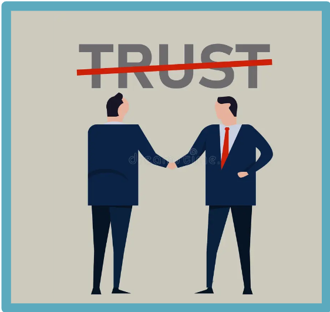
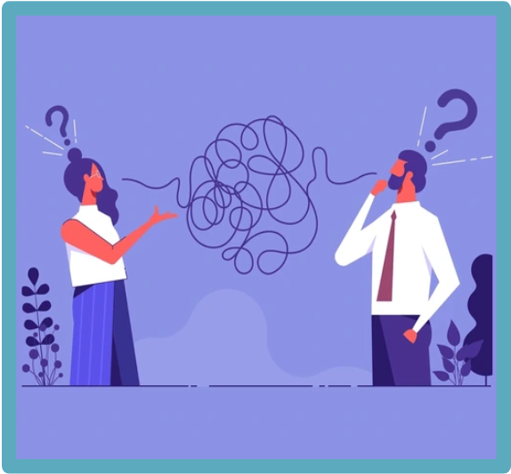

Helpful Communication Techinques Between Familes and ELP Teachers
By Sandra Rogel
Home
Basic Communication Skills
Benefits of Positive Communication
Consequences of Negative Communication
Quiz
Summary
Info
Consequences of Negative Communication
Negative communication between preschool teachers and parents can lead to several issues:
Hover over and image for an explanation.
| |

|
 |
||
Misunderstanding |
Loss of Trust |
More Stress |
Confusing Messages |
Weakend Bonds |
Positive communication is key to a supportive and smooth-running educational environment.
Play the audio and follow along with the slides bellow